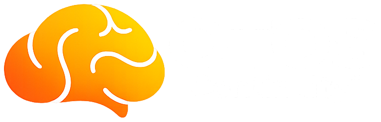

Executive overview · Private & confidentialOTOS Continuity™ is the non-clinical layer that intervenes upstream and earlier for patients with suspected ADHD-driven Addiction. Keeping them visible, held and ensuring the best chance of success in Addiction recovery, OTOS closes the gap where the wait is long, care breaks, relapse happens, cost compounds and lives are lost.
OTOS Continuity™ is a non-clinical infrastructure layer that targets a high-cost, high-risk cohort — keeping them visible as they move between NHS and community services, closing the gap where the wait is long, care breaks, relapse happens, cost compounds and lives are lost.
It is built for a specific, expensive group: adults whose addiction is driven by untreated or under-treated ADHD — a pattern we call NIA (Neurologically Informed Addiction). They are known to services but lost between them, cycling through A&E, addiction services, crisis teams, courts and waiting lists — each seeing a fragment, none holding the thread. OTOS makes that thread visible, without diagnosing, prescribing or touching a single clinical decision.
OTOS is focused on one thing: catching the ADHD upstream. Where ADHD is identified and treated, the brain can finally use the recovery work the system already funds. OTOS sits around existing services — not replacing or integrating with NHS systems — and holds the person on the thread through that window, so the addiction support, when it comes, lands on a brain that can take it. At each touchpoint (a referral, a discharge, a session, a check-in) staff log a quick, anonymous signal; OTOS turns those into a receipted thread and surfaces drift — silence, a missed follow-through, a cooling contact — so a named human can act before the next crisis. OTOS follows the person, not the silo — Continuity™ could be considered the new, digital waiting room: not passive waiting, but an active holding layer that keeps the person connected until the clinical route catches up.
The thread is woven from real, daily contact: RCE ADHD waiting-well classes and active-waiting sessions, plus light, permission-based mobile check-ins the person opts into. Every interaction is an encrypted, consent-based digital signal — so a keyworker sees, across their whole caseload, who is still engaged and who is quietly slipping, without chasing or guesswork. It lightens the caseload rather than adding to it.
Addiction recovery asks for the exact capacities unmanaged ADHD strips away. Treat the driver first, and the same support the system already funds finally lands.
| Capacity | Recovery requires | Unmanaged ADHD takes away |
|---|---|---|
| Focus | Sustained attention through therapy & recovery work | Chronic distractibility |
| Working memory | Holding tools, keeping appointments | Forgets, misses, loses the thread |
| Impulse control | Pausing, resisting cravings in the moment | Reflexive, immediate urges |
| Routine | Repetition that physically rebuilds pathways | Can’t initiate or sustain routine |
Medication opens the window; OTOS keeps it open. A targeted, almost surgical approach to one specific cohort — ADHD-driven addiction — not a generic tool. For very little investment, it could save billions and lift addiction-service outcomes materially. (The full clinical breakdown sits in the accompanying Evidence Dossier.)
We are not asking anyone to fund a rollout — the first step is a small, surgical, stoppable demonstrator that proves or disproves the model with locally validated evidence, in Cambridgeshire & Peterborough alongside named local partners. Early conversations are already open, including with Public Health at the local authority, who recognised the need — though no funding is available immediately.
The cost of this cohort does not disappear when it is unaddressed — it moves to a worse budget line: A&E, ICU, criminal justice, repeat detox and rehab. Treat the driver and hold the thread, and that spend can be interrupted before it compounds.
Two things sharpen the timing. Change Grow Live’s own national position already names neurodivergence as central to addiction — so this aligns with where the sector is publicly moving. And despite NICE NG87 and RCPsych guidance, no ADHD team is yet actively running this joint pathway with addiction services. The first to do it becomes the national pioneer — adhering to guidance the system already endorses, while saving lives and money.
NIA is a proposed category with no current owner; a pathway-recognition submission to the Royal College of Psychiatrists is in progress. For a strategic partner the opportunity is not a molecule — it is to help evidence the signal and shape the category before it becomes a market: the continuity layer the whole ADHD-and-addiction pathway will run on.
The ask is small: a conversation about whether this is worth scoping — and if so, support to build and run the bounded demonstrator that turns the thesis into evidence. Nothing here assumes endorsement; OTOS surfaces signals, partner teams make every decision.
I am not a detached observer of this problem — I am the proof of it. Thirty-five years self-medicating undiagnosed ADHD took me through A&E, ICU, a suicide attempt, dayhabs, rehabs and the brink of death more than once. The system treated the addiction over and over while the driver underneath sat untreated on a medication-review waiting list — I am still on that list. After a final relapse, convinced it was the ADHD, I went private, finally got medicated, and everything changed within hours. OTOS exists because that should not have taken me to the edge of death to discover — and because, caught earlier, it is avoidable. It can be avoided for the next person.